How do you make AI trustworthy when it controls money?
Senpi is an AI-native trading platform for Hyperliquid perpetuals — describe a strategy in plain English and an AI agent builds, funds, runs and protects it. But the more the AI could do, the less users understood what it was doing. As co-founder and design lead — working with the founders, engineering and growth — I designed the experience around making autonomous trading visible, understandable and controllable.
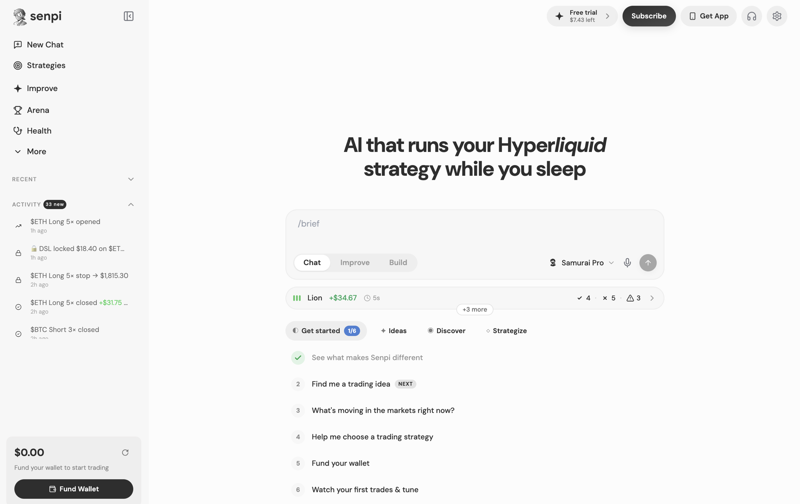
The problem
Users could see the outcome. They couldn't see the thinking.
A normal trading product asks “what do you want to do?” An autonomous system asks “what should the system do for you?” That creates a trust gap: an agent could be actively scanning markets, evaluating opportunities or intentionally waiting — but to the user, all three states looked exactly the same. Nothing is happening.
We saw the gap through the signup → funding funnel, customer conversations, support questions, user behavior, and agent telemetry that was never surfaced in the product. The strongest signal was activation:
People who crossed the funding boundary were willing to use the product. The bigger problem was getting users comfortable enough to cross that boundary.
01 — The money moment
Trust is decided at the deposit screen.
The funding step used to be a bare QR code, a wallet address and a row of network chips — everything technically necessary, and nothing a nervous person actually needed. Users were being asked to move real money into a system they'd known for five minutes. So we rebuilt the moment around the questions people were silently asking:
“Is my money safe?”
A self-custody trust block sits directly above the QR: this wallet is yours, secured by Privy — only you hold the key, and you can withdraw anytime.
“What can the agent actually do?”
Clear boundaries where they matter: the agent can trade with your permission — it can never withdraw or transfer. Capability limits stated as facts, not marketing.
“Who is behind this?”
A quiet investor strip at the moment of maximum fear — reputation signals exactly where the hesitation happens, not sprayed across the site.
“Is my account protected?”
Multi-factor authentication, added via Privy, around sign-in and consequential account actions — so the wallet users were being asked to trust was visibly protected.
The same restraint applied outside the modal: one muted self-custody line on the balances page, tooltips where terms needed them — and deliberately no banners. Over-reassurance reads as nervousness.
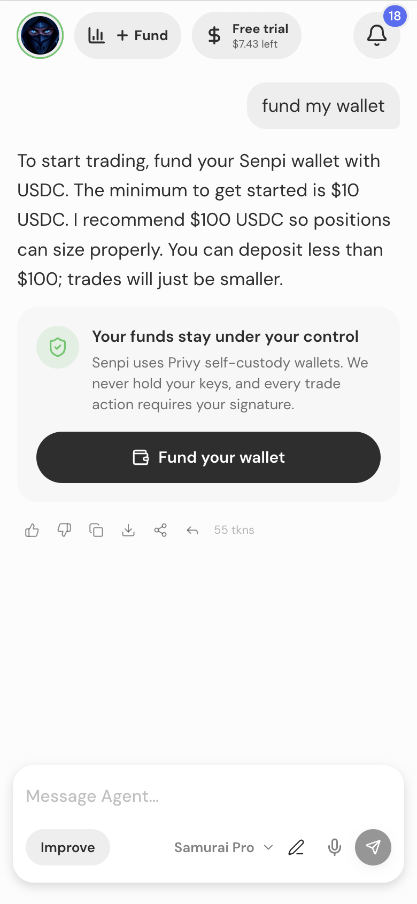
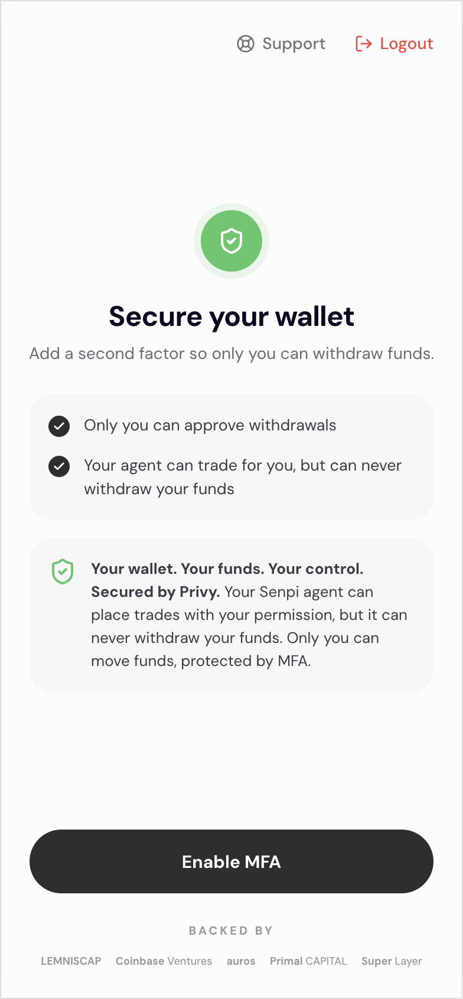
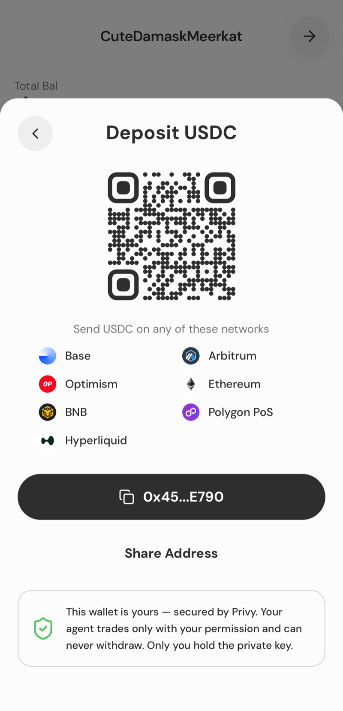
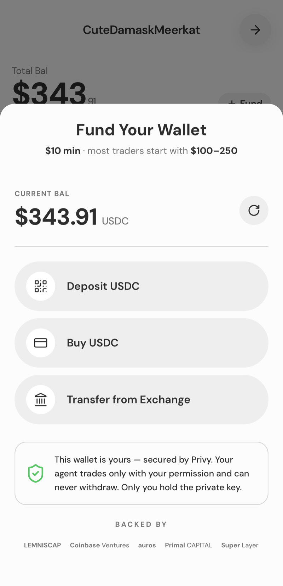
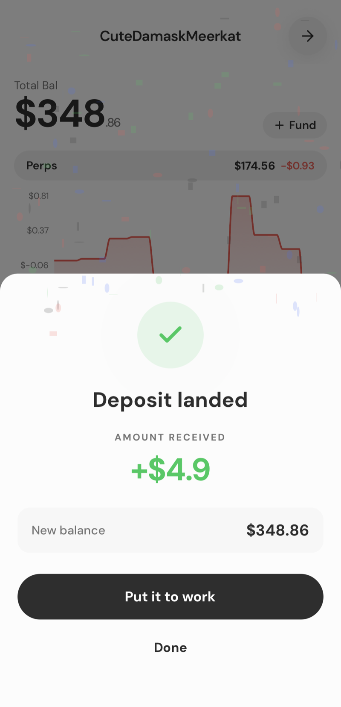
02 — Visibility
First, users needed to know the agent was actually working.
An autonomous agent makes hundreds of decisions that never become trades:
If the interface only shows trades, users see “nothing happened.” So I designed View All Scans — a decision timeline that surfaces meaningful activity instead of raw telemetry: what the agent considered, what it acted on, what it skipped and why, errors, fills and strategy state.

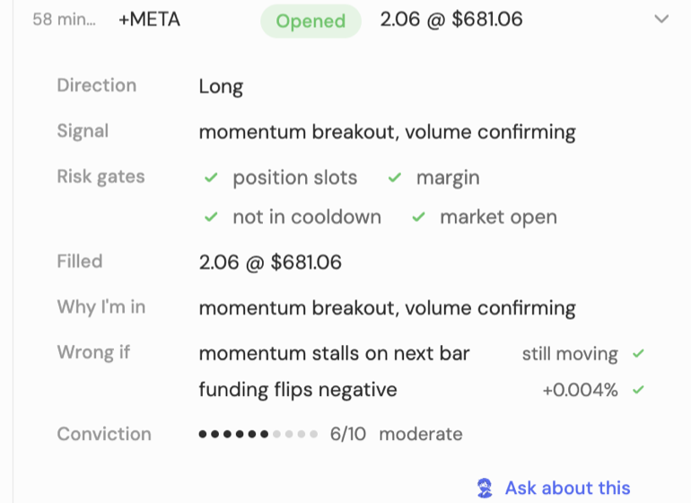
03 — Understanding
Visibility wasn't enough. Users needed to understand the decisions.
Seeing that an agent opened a position doesn't answer why. So I designed positions to explain themselves:
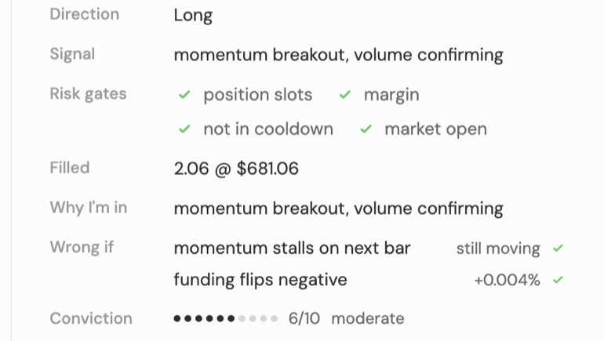
The goal was to change the interpretation of a losing trade — from “the AI lost my money” to “the strategy believed X, but X was invalidated by Y.” That distinction matters when the system is autonomous.
04 — Control
Trust doesn't mean giving users control over everything.
The existing permission model could interrupt user-initiated actions while failing to provide the right intervention around more consequential autonomous ones. So I reframed permissions around consequence rather than generic technical access — instead of “can this agent use this tool?”, the experience asks “this is what the agent is about to do. Do you want it to proceed?”
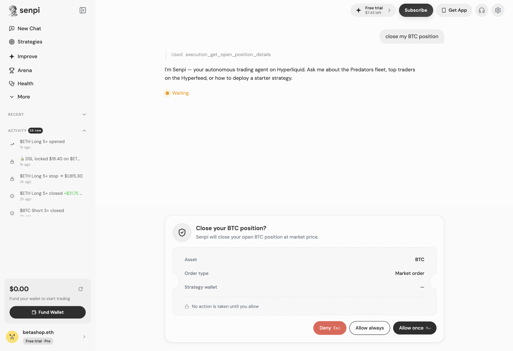
05 — Collaboration
The end state wasn't AI autonomy. It was AI collaboration.
Once users could see what the agent was doing, understand why, and intervene when necessary, the relationship could evolve beyond “AI trades for me” toward “AI trades with me.”
Build
Understand how the agent constructs a strategy.
Run
Watch it operate and intervene when the decision matters.
Review
Understand what happened and why.
Learn
Use corrections and preferences to improve future behavior.
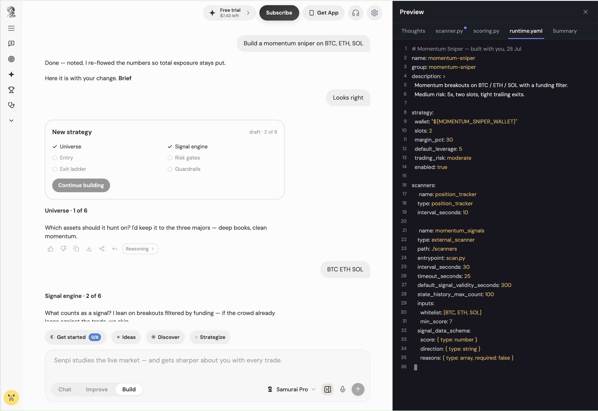
Same product, one year apart.
Before — 2024
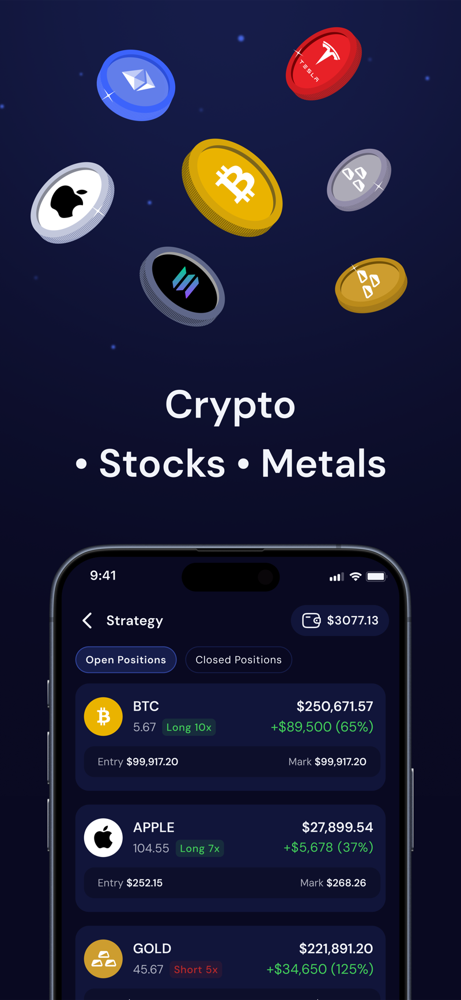
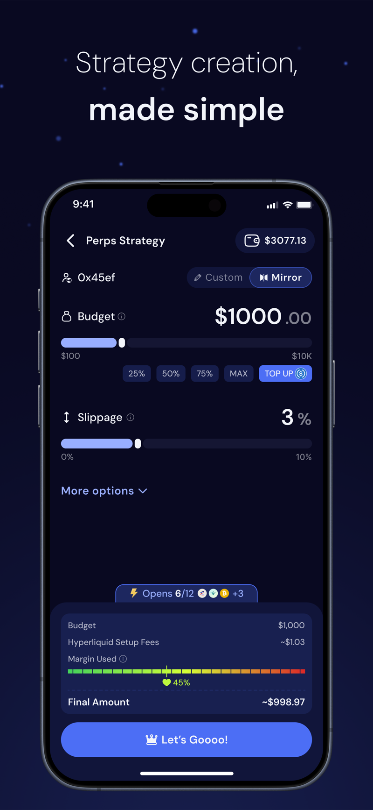
Now
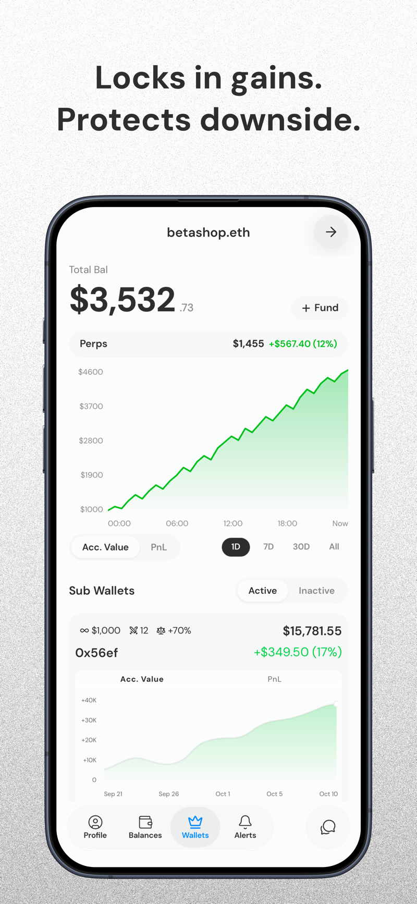
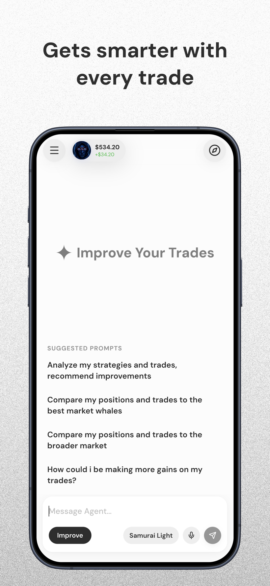
Still in flight: strategy-build previews, durable user memory, and proactive reviews — designed, not yet shipped.
The product evolution
The trust model: earned at the deposit screen, deepened in four layers.
This became the core design framework for autonomous trading.
Outcomes
The most important result wasn't simply more activity. It was reducing the trust gap between “the AI is doing something” and “I understand what the AI is doing.”
What I learned
Make autonomy understandable before making it powerful.
Traditional software asks users to understand the interface and make the decision. Autonomous software makes the decision for them — which changes the designer's job. The interface has to answer: what is happening, why is it happening, what happens next, when can I intervene — and above all, how do I know I can trust this system with something consequential? For Senpi, the answer wasn't more automation. It was better visibility, explanation and control around the automation. I didn't design an AI trading platform — I designed the trust layer around an autonomous system that controls money.